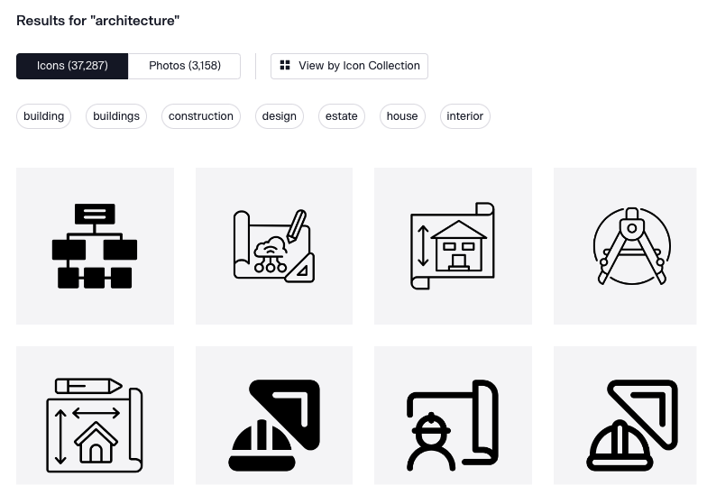

Building Data Foundation Website: Lean Design Patterns and Techniques
IN THIS SECTION, YOU WILL: Get a few practical tips on how to build lead architecture tools (e.g. for creating the data foundation), using simple, widely available tools.
Ever felt overwhelmed by the multitude of specialized tools available for creating architectural artifacts? Fear not! We’re here to show you that simplicity is often the key to brilliance. Imagine crafting high-quality documentation and stunning visualizations without the need for complex software or extensive training. Not only is it possible, but it’s also incredibly efficient.
In this guide, we’ll explore the power of simple, lean tools that are widely available and easy to use. You don’t need to be a tech wizard to create impressive Data Foundation dashboards and architectural documents. Whether you’re a seasoned architect or a newbie, you’ll find these techniques refreshingly straightforward and immensely effective.
Here are two examples to illustrate the power of simplicity:
- I’ve developed a number of plain HTML/CSS/DOM templates (with open-source code) that I leverage in my daily work, and you can use yourself.
- Sokrates.dev, a tool I developed, generates all reports in plain old HTML without any special libraries. Check out the example of the Apache Foundation source code landscape.
These documents work on any browser, can be hosted on any simple HTTP server, and can be opened directly on any laptop or PC. They are also easy to maintain since no complex frameworks are used.
So, grab your digital toolkit and join us on this exciting journey. We’ll dive into the world of plain old HTML, CSS, and the DOM, harnessing the power of everyday tools to create extraordinary results. Get ready to transform your architectural documentation process and unleash your creativity like never before. Let’s embark on this adventure together and discover the magic of simplicity!
Implementation Principles
When setting out on any architectural journey, it’s vital to have a clear set of principles to guide you. Think of these principles as your trusty map and compass, ensuring you navigate your way through the architectural landscape efficiently and effectively. Here are the key principles that will keep you on track:
- Leverage Existing Infrastructure: Why reinvent the wheel when you can turbocharge what you already have? Utilizing existing infrastructure saves time and resources.
- Maintainable by a Small Architecture Team: Keep it simple! A lean team means less overhead and faster decision-making.
- Broad Access Inside Organization: Everyone should have a ticket to the show. Broad access ensures that all stakeholders can engage and contribute.
Lean Implementation Techniques
Here are a few techniques I leverage in my work.
Visualization With Plain Old HTML/CSS/DOM
Who says you need a high-tech toolbox to create dazzling visuals? Sometimes, sticking with the basics can yield the most elegant and effective results. Embrace the simplicity and power of plain old HTML, CSS, and the DOM.
Earlier, I always used heavyweight visualization and UI frameworks to build interactive tools. But nowadays, I leave the heavy frameworks at the door. We’re going to show you how to create beautiful, functional interfaces with just the basics. No React, Angular, or Vue here – just pure, unadulterated HTML and CSS magic.
 Figure 1: Simple generated HTML visual of source code analysis results.
Figure 1: Simple generated HTML visual of source code analysis results.
Embedding JSON in HTML Documents
Most of the documents I create are data-driven. This means that visuals are generated using templates based on curated data. For my tools, I primarily export data in JSON format and embed it into a copy of an HTML template. JSON is essentially the lifeblood of these data-driven applications. By embedding JSON directly into HTML documents, I can dynamically integrate and display data. This method not only makes the documents more portable but also ensures they can be easily opened and viewed on various devices, including laptops.
Simple Proven HTML-Based 2D & 3D Visuals
Let’s talk visuals. You don’t need cutting-edge tools to create stunning graphics. Here are some simple, proven methods to make your data pop:
- Bar Charts: Classic and effective, perfect for showing comparisons.
- Graphviz: Ideal for creating complex graphs and diagrams with ease.
- 3D Node Graph: Add an extra dimension to your data visualization.
- Bubble Chart: Perfect for showing relationships between data points in a visually engaging way.
- Bubble Zoomable Chart / Sunburst: Great for exploring hierarchical data with interactive zoom.
- Treemap: Perfect for visualizing nested data structures in a compact form.
Icon Libraries
Icons are the unsung heroes of data visualization. They add clarity, visual appeal, and help communicate concepts quickly. Explore websites like thenounproject.com for a treasure trove of icons that can enhance your visualizations.
 *Figure 2: A screenshot from thenounproject.com.
Version Controlled Lean Documents
All generated documents are designed to be small, lean, and capable of being version controlled along with the data used to generate them.
Small and Lean Documents
The documents are compact in size, ensuring they do not consume excessive storage space, making them suitable for large projects. They are efficient, containing only essential information without unnecessary bloat, which makes them easy to read, understand, and manage.
Version Controlled
These documents are managed using a version control system (VCS) like Git. This system tracks changes over time and allows users to revert to previous versions if needed. It also enables multiple users to work on the same documents simultaneously, providing a clear history of changes, which improves collaboration and reduces conflicting edits.
Together with Data
The data used to generate the documents is stored and version-controlled alongside the documents. This ensures that the documents and data are always in sync. This approach allows for the reproduction of any document version exactly as it was at any point in time, maintaining integrity and reliability.
Lean Hosting Techniques
When it comes to hosting static HTML documents, two simple yet crucial requirements are essential:
-
Open Documents on Your Laptop: Easily open your documents directly on your laptop without needing to install any servers or special frameworks. This ensures accessibility anytime, anywhere—no setup required!
-
Share Across the Organization: Use any simple HTTP server (like GitHub Pages) for straightforward sharing. No complex setup, just pure, effortless sharing.
By keeping things simple, your documents remain accessible, easy to share, and maintainable. No advanced technical knowledge or elaborate configurations are necessary. So go ahead, create your documents, open them anywhere, and share them effortlessly!
Benefits
Lean documents are efficient to generate, easy to store, and fast to process. They provide detailed traceability, enhancing transparency and accountability through a comprehensive history of changes. Consistency is maintained as the context and basis for documents are always available, preventing inconsistencies and errors. Multiple users can efficiently collaborate with clear mechanisms to resolve conflicts and track contributions.
By ensuring all generated documents are small, lean, and version controlled along with their data, the system maximizes efficiency, consistency, and collaboration while maintaining a high level of traceability and reproducibility.
Collaborative Editing via Google Sheets
To facilitate collaborative editing of data that requires manual changes, I frequently relied on Google Sheets to provide controlled collaborative changes by a broader audience. By leveraging Google Sheets, multiple users can simultaneously access, edit, and update data in real time, ensuring that everyone works with the most current information.
Figure 3: A collaborative editing model.
To further streamline this process, I embedded a JavaScript script within the Google Sheet. This script’s primary function was to export the data into a JSON format, which could then be used to generate visual documents using HTML templates.
Figure 4: Exporting Google Sheet data to JSON for document generation.
Two Examples Deployments
In my recent experiences, I utilized the following two examples to create a dynamic ecosystem of collaborative, data-driven dashboards.
Start with a straightforward setup using GitHub pages for hosting and Google Sheets for data management. This combination is powerful, easy to maintain, and accessible.The nopen source example is availabel at the resources site
Figure 5: A simple runtime architecture leveraging GitHub pages and Google Sheets.
For those looking to add a bit more flexibility, consider incorporating CDNs, internal IAM systems, and Google Sheets. This setup allows for better scalability and integration with internal systems.
Figure 6: Slightly more flexible runtime architecture leveraging CDNs, internal IAM, and Google Sheets.
By adhering to these principles and techniques, you’ll be well-equipped to create stunning, maintainable architectural documentation and visualizations that everyone in your organization can appreciate and utilize. Happy architecting!